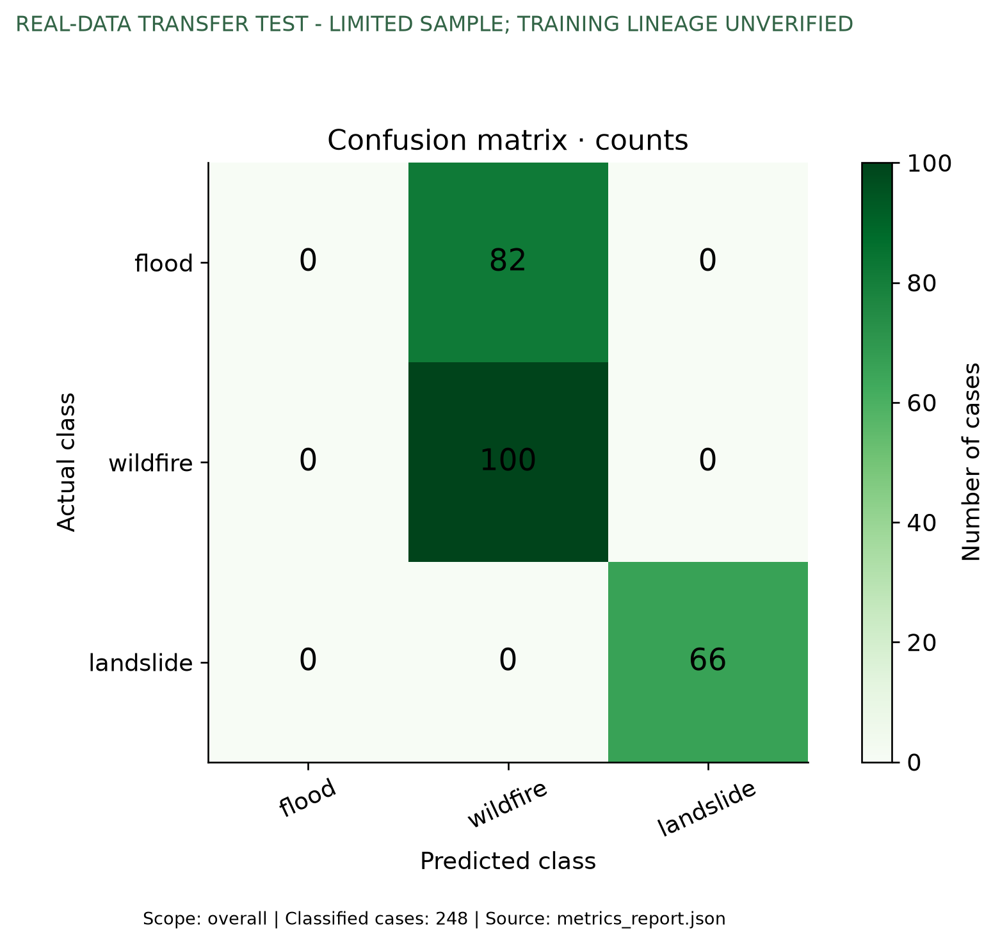
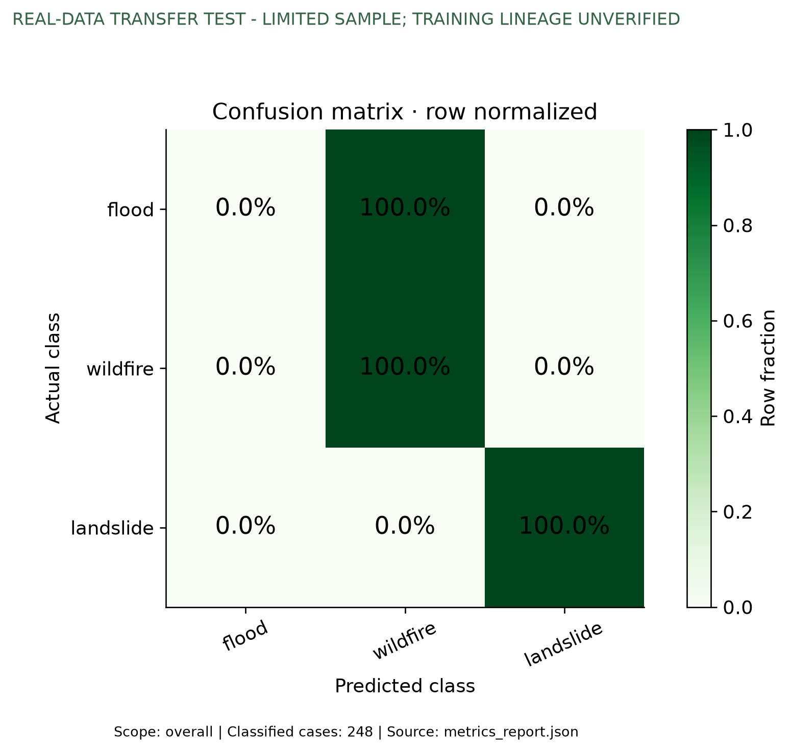
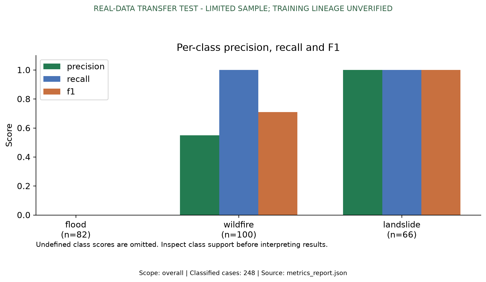
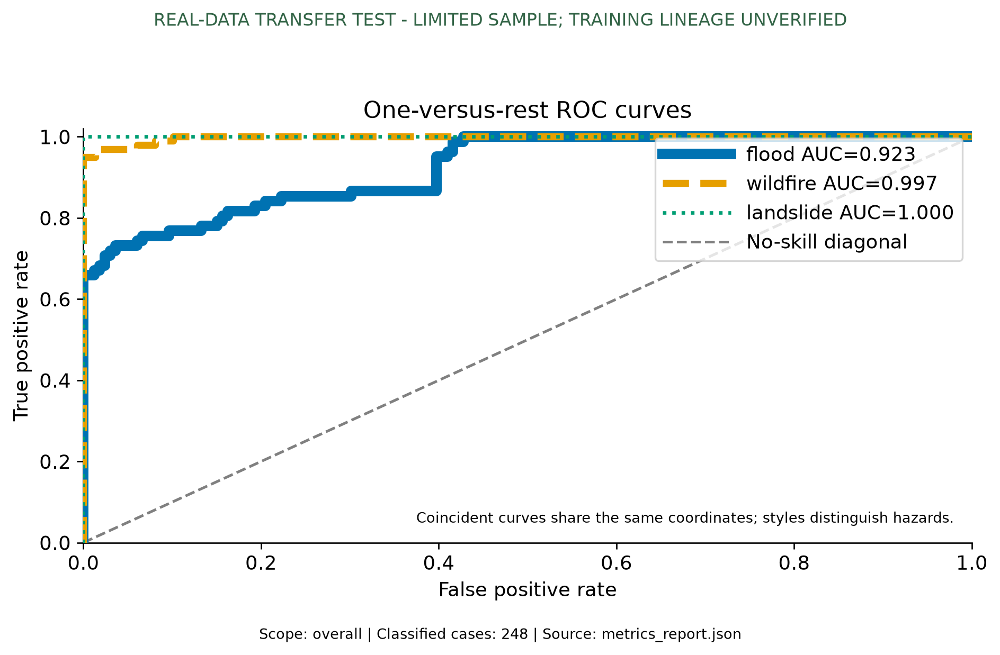
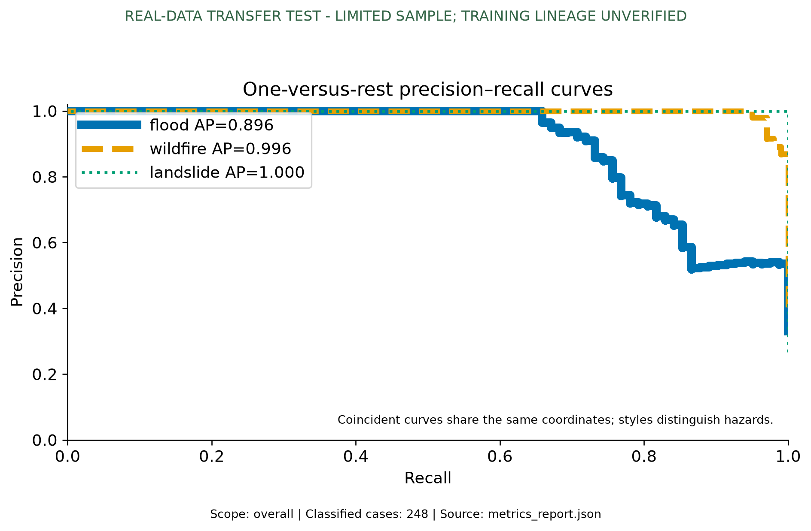
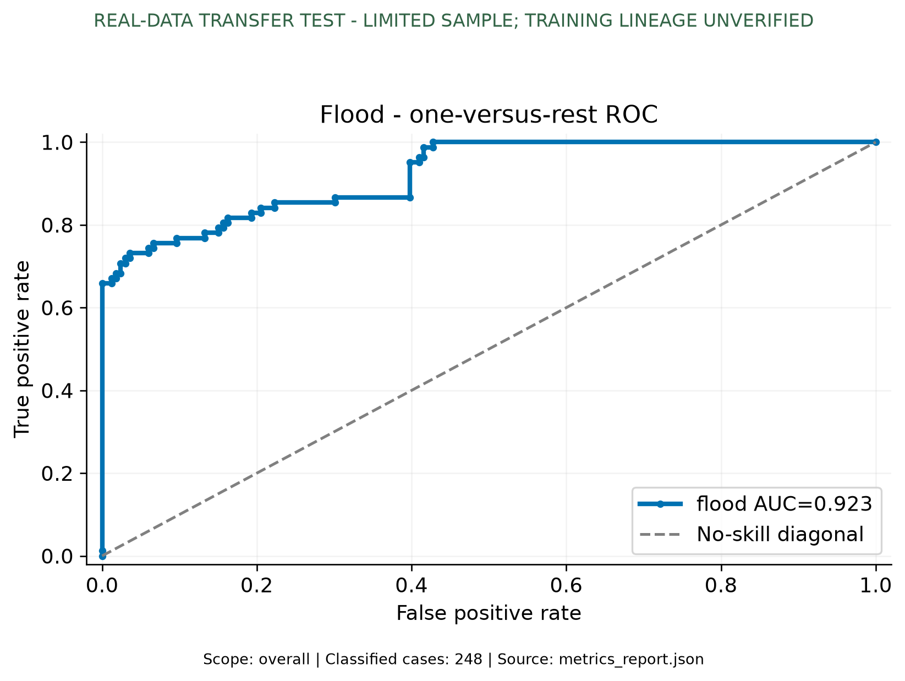
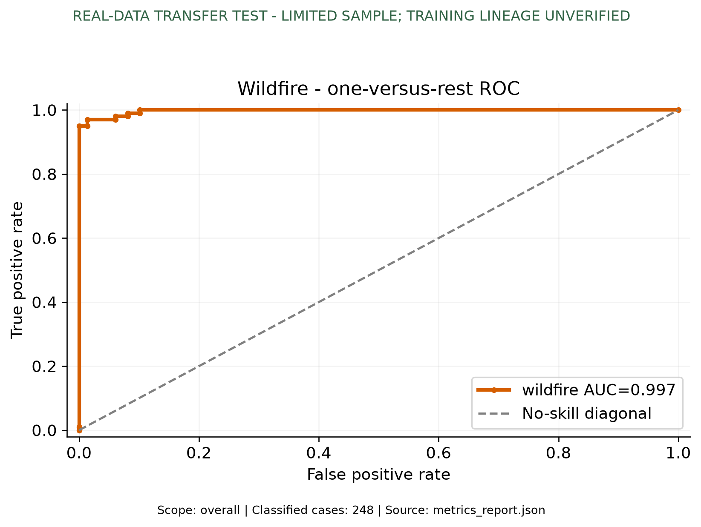
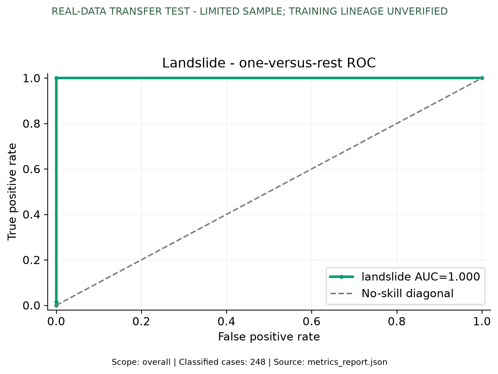
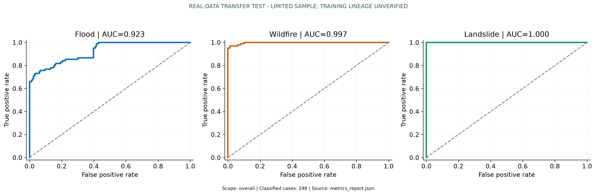
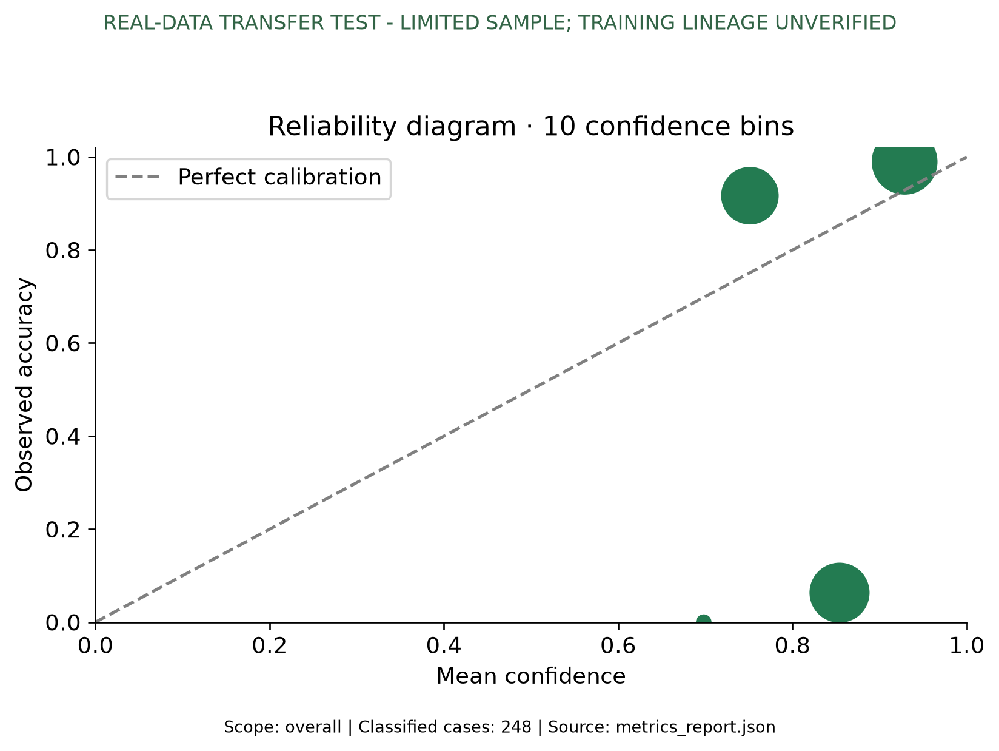

REAL-DATA TRANSFER TEST - LIMITED SAMPLE; TRAINING LINEAGE UNVERIFIED
REAL-DATA TRANSFER TEST - limited sample, incomplete training lineage; not an operational hazard benchmark.
Source: evaluation\real_transfer_expanded\metrics_report.json
Saved model results
Evaluated cases: 248
- Accuracy: 66.94%
- Macro precision: 51.65%
- Macro recall: 66.67%
- Macro F1: 56.97%
| Hazard | Cases | Precision | Recall | F1 |
|---|
| flood | 82 | N/A | 0.00% | 0.00% |
| wildfire | 100 | 54.95% | 100.00% | 70.92% |
| landslide | 66 | 100.00% | 100.00% | 100.00% |
Protocol and interpretation limits
- Real public imagery, independently published pixel annotations; classification evaluated as source-domain task recognition.
- Flood means flood-event water-source image, not verified new inundation; wildfire means burn scar, not active fire.
- Only positive annotated patches; no non-event detection evaluated. Mask-empty patches excluded explicitly.
- Each hazard uses a different dataset/sensor adapter: source and modality confounding limit interpretation.
- No training manifest exists in the selected bare state_dict checkpoint; complete historical training exclusion cannot be proven.
- Exact file SHA256 duplicates checked against known local datasets/ training assets; no event/region independence claim.
- HLS official validation subset is evaluation only: 100 fixed-seed source pairs from first 100-row converted shard; not event-held-out.
- L4S RGB reflectance adapter differs from historical 8-bit RGB training assumptions. HLS reflectance is not divided by 10000 again.
- Missing-context ablation: empty H3 sequences, zero-filled geographic attributes; 4 repeated single-date frames, 64px deployment grid.
- Segmentation, geographic regression, vulnerability and language quality not evaluated; no validated trained outputs/references for these tasks.

confusion_matrix.png
confusion_matrix_normalized.png
per_class_scores.png
roc_curves.png
precision_recall_curves.png
roc_flood.png
roc_wildfire.png
roc_landslide.png
three_hazard_roc.png
calibration.png